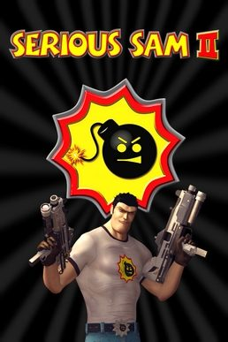

Serious Sam 2 (PC)



(Croteam/Take2)
Every so often while engaged in virtual worlds, us gamers crave a break from complex narratives, intricate game design and ambitious free-form environments. The likes of Grant Theft Auto and Deus Ex manage to satisfy our gaming needs most of the time, but every so often we just wanna blow shit up real good. Serious Sam satisfied this need when it hit the streets in 2001, its old-school shooter mentality harking back to ID’s seminal Doom: stripping it right back to pretty environments, big guns, endless waves of monsters – and plenty of them. Now in 2005, European developers Croteam have returned to deliver the final word in old-school first person action.
Serious Sam 2 is twitch gameplay taken to the extreme. There’s little pretence for plot or narrative: just shooting, shooting, and more shooting. Injected with a crazed sense of colourful wackiness from the very first cutscene, the game begins with our hero “Serious” Sam Stone, casually dressed in a T-shirt and jeans, summoned to rid the universe of Mental and his wicked forces, forcing him to travel to different planets to collect medallion pieces from their oversized oppressors. Or something. The plot is really a thinly veiled excuse to poke fun at FPS conventions at every opportunity, and the action is fused regularly with moments of genuinely funny tongue-in-cheek humour that prevent the whole experience from feeling cold.
Before long a gun is placed in your hand, you’re pulling the trigger and the way is cleared for some crazy frenetic action, the monsters exploding into sprays of red mist and bouncing masses of bloody gibs. As simplistic as it may be, you’ve just gotta love it. As with the original Serious Sam, the scale of some of the battles verges on the ridiculous, with the vibe kept tense, fraught and frantic at all times – just perfect for those 20-minute sit-down-and-blast-and-then-walk-away sessions. Often the player is lead into a false sense of security with a few deceptive moments of calm, before monsters begin rushing from all directions. Keep moving and shooting and you may just survive.
Keeping the focus on the fun
It’s some of the most hectic action you’ll ever encounter, but while the focus is kept squarely on basic shooter action, the designers have subverted this simplicity to a degree by ensuring there is always something cool and fun to do. Villages to defend, turrets to man, dinosaurs to ride and ridiculously overgrown bosses to destroy. The game is littered with many moments of true insanity, with one instance where you roll around decimating your enemies in a giant spiked ball of death springing instantly to mind.
One big leg up that Serious Sam 2 has over its predecessor is its visuals. Bringing things screaming into the next generation inhabited by the likes of Far Cry and Half Life 2, the graphics are no less than gorgeous – in a zany, Serious Sam kinda way. All the bells and whistles PC gamers have come to expect are there: high poly counts, bumpmapping, shaders, ragdoll physics, destructible environments, the whole shebang. But more importantly, the graphics engine in Serious Sam 2 manages to carve out its own identifiable niche. Offering the player the full array of blindingly bright and fully saturated colour, it puts the designers in good stead to render the many wacky enemies and imaginative environments we’ve come to expect from the franchise.
So many pretty monsters to destroy
Staying within arms length of the game’s theme of zany humour, and putting the spiffy graphics engine to good use, the art department were told to really go to town in the design of the monsters. There are wave after wave of ridiculous beasties to mow down, inciting a belly laugh on countless occasions at the sheer stupidity of it all. Charging clockwork rhinoceroses, kung-fu zombies, giant spider mechs, cackling explosive clowns and my personal favourite – the kamikaze bombheads that make a return from the original game. These boys sum up the frenzied insanity of Serious Sam 2 perfectly – little dudes who run towards you at full tilt in groups whilst screaming at the top of their lungs. Oh, and the fact they have bombs for heads means they explode upon impact. You’ll be often blown sky high by their explosive fury, but it’s hard not to also be blown out of your chair by the creative insanity of it all.
Complementing the cannon fodder is a wide assortment of inventive and gorgeous locations that take full advantage of the new technology on offer. Featuring none of the drab urban environments seen in so many other shooters, Serious Sam 2 instead offers an assortment of colourful and wide-open spaces to run amok in – tropical islands, swamps, magical fairy tale planets, sprawling tree houses high up in the heavens and stunning Chinese villages with fireworks setting the sky alight. Every new level takes you somewhere different, and there’s always something to make you smile and go ‘wow’. Roaming through the ‘giant junkyard’ level in particular is like being thrown into a live-action Honey I Shrunk the Kids. The viewer is confronted with mammoth cigarette butts, huge empty bottles, towering kitchen knives plunged into the ground and, unfortunately at one stage, even an oversized dog shit. Yep, it’s that sort of game.
It’s easy to take pot shots at Serious Sam 2, but as repetitive as it may be, to bag it for being light on plot would be like slagging off Slayer for failing to show more of their feminine side: it completely misses the point. Milking every inch out of its old-school concept, the skilful and imaginative execution of Serious Sam 2 makes it a whole lot more fun than it has any right to be. While there’s little variation, it keeps the fun factor high at all times and if you’re in the market for an full-throttle shooter, things just don’t get any better. Enter the fray with your expectations low and you’ll find a barrel of laughs. When all is said and done, Serious Sam 2 is a whole crapload of fun – definitely nothing more, but certainly nothing less.
Rating: 4/5